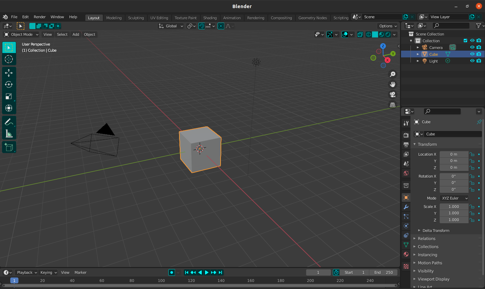

Distribución de la pantalla.
Dentro de la aplicacion la pantalla se encuentra dividida en partes, las
cuales todas
tienen una funcion diferente.
En este cuadro se señalan las partes de la aplicación Blender.

{{zonaClickada.nombre.charAt(0).toUpperCase() + zonaClickada.nombre.slice(1)}}:
{{zonaClickada.descripcion}}